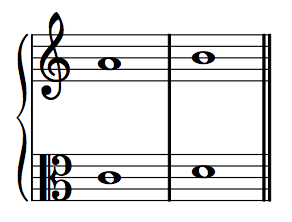

Types of contrapuntal motion
There are four types of contrapuntal motion between two musical lines. Differentiating these four types of motion is essential to generating good voice-leading, both strict and free.
In parallel motion, two voices move in the same direction by the same generic interval. For example, the following two voices both move up by a step. Note also that both dyads form the same generic interval (sixth). This will always be true when two voices move in parallel motion.

In similar motion, also called direct motion, two voices move in the same direction, but by different intervals. For example, the following two voices both move down, but the upper voice moves by step while the lower voice moves by leap. Note also that the two dyads are different generic intervals. This will always be the case with similar or direct motion.
In contrary motion, two voices move in opposite directions—one up, the other down.

In oblique motion, one voice is stationary, while the other voice moves (in either direction). The stationary tone may or may not be rearticulated.

or